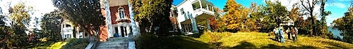
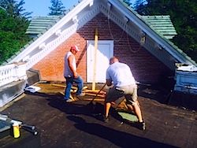
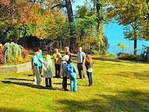

Friends,

Visitors to FOR's headquarters, Shadowcliff, regularly share that the rejuvenation they find here sustains them in their work to create change and transformation. That's why we were concerned when our Nyack home was imperiled by structural damage from summer rains.
Continuing roof repair and structural support is urgently needed to protect our -- and the peace community's -- home in Nyack.
Donate $30 to the Shadowcliff Building Repair Fund
Donate $133 to the Shadowcliff Building Repair Fund
Donate $300 to the Shadowcliff Building Repair Fund
Donate any amount -- all donations are fully tax deductible
For Shadowcliff to continue to be a refuge and the home for our work, we must raise at least $30,000 for the Shadowcliff Building Repair Fund.
In 1957, the Fellowship of Reconciliation moved from its original headquarters in New York City to a 1921 house in Nyack known as Shadowcliff for well below the market value. The decision to move outside of the city has given perspective and grounding to generations of FOR folks as we look out on the waters of the Hudson.
Over the years, as our on-site staff has grown smaller, keeping up with the needs of the grounds and property has been challenging. We have met the challenge faithfully, but it has not been without significant cost. We have had at times to make difficult decisions between attending to regular maintenance and funding the pressing needs of peacework to which we are all committed.
Just as we have sustained damages in years past from hurricanes and sprinkler malfunctions, we will not allow this present challenge to keep us from moving forward.
Earlier this year, we were honored to see Shadowcliff listed in both the New York State and National Registries of Historic Places.
Chip in $30 or more and help us retain historic Shadowcliff as a retreat for peace and justice.
When we last made an emergency appeal of this nature, you undergirded FOR-USA with more than $12,000 for repairs. We are humbled and grateful for the support of our members and supporters who affirm that we are in this together!
We are looking to you to help us again with this challenge.
Donate to the Shadowcliff Building Repair Fund so we can preserve this resource for FOR-USA and the peace community.
You may also send your contribution by check. Put "BRF" (for "Building Repair Fund") in the memo line, and send your check to:
FOR-USA
P.O. Box 271
Nyack, NY 10960
We are sincerely grateful for anything you are able to donate.
In peace,
Kristin, Jonette, Hope, Hillary, Stacey, Nicole, Meredith, Gretchen, Ethan and Linda
Fellowship of Reconciliation |